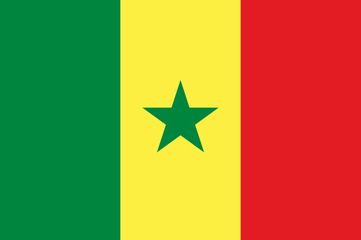
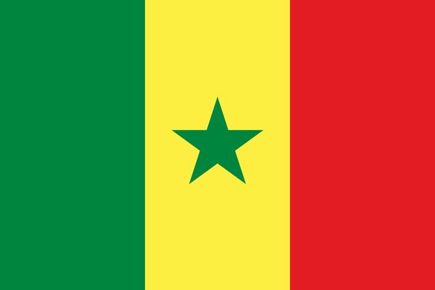

Notre équipe


Nos Extensions
AMERIQUE

USA-Pennsylvanie
La Kingdom of Heaven Church en Pennsylvanie est située à Newfoundland, dans un cadre paisible entouré de nature. Elle est connue pour son engagement envers la paix mondiale et la restauration spirituelle. Fondée avec une vision de transformation communautaire, elle accueille chaque dimanche des fidèles venus chercher la présence de Dieu et des enseignements profonds sur le Royaume céleste.
Dans le cœur vibrant de l’Amérique, une seule église a donné naissance à *quatre autres*, chacune implantée dans une ville différente. Ce n’était pas simplement une expansion, mais une explosion de foi, de compassion et de communauté. De la côte Est aux plaines du Midwest, cette église-mère a semé des graines qui ont fleuri dans des contextes uniques, portant le même feu sacré.
Une église située à Pennsylvanie, États-Unis, a donné naissance à:Dallas (États-Unis),Atlanta (États-Unis),Phoenix (États-Unis),San Diego (États-Unis).
Chaque ville a vu s’élever une communauté vibrante, inspirée par la vision de Chicago.


Canada-ottawa
À Ottawa, la Kingdom Culture Church incarne l’esprit du Royaume de Dieu à travers des rencontres dynamiques et une approche moderne de la foi. Fondée par Shawn et Michelle Gabie, cette église vise à “aider chacun à expérimenter Dieu” dans tous les aspects de la vie. Elle se distingue par son énergie, ses enseignements surnaturels et son impact dans la capitale canadienne.
Du froid du Yukon aux rues animées de ottawa, *sept églises* ont vu le jour grâce à une seule. Ce n’est pas seulement le Canada qui a été touché: certaines sont nées dans d’autres *pays et villes*, preuve que l’impact spirituel ne connaît pas de frontières. Une église, une vision, et sept foyers de lumière.
Depuis ottawa, une église a engendré:Vancouver (Canada),Montréal (Canada),Halifax (Canada),Ottawa (Canada),New York (États-Unis),Londres (Royaume-Unis),Londres (Royaume-Unis),Bruxelles (Belgique).
Une expansion qui dépasse les frontières canadiennes, touchant l’Europe et les États-Unis.
Alaska
La Kingdom Life Church en Alaska est une communauté vibrante qui embrasse les dons du Saint-Esprit et les cinq ministères bibliques. Dirigée par le pasteur Kim Patterson, cette église se veut un lieu de guérison, d’unité et de leadership spirituel dans le Grand Nord. Elle joue un rôle essentiel dans la vie des croyants de cette région isolée.
Dans les terres glacées de l’Alaska, une église a bravé l’isolement pour donner naissance à *cinq autres*. Chacune est devenue un refuge, un phare dans la nuit polaire, portant la chaleur de la foi là où le silence règne.
Une église à *Anchorage* a donné naissance à:Fairbanks (Alaska),Juneau (Alaska),Nome (Alaska),Seattle (États-Unis),Whitehorse (Canada).
Même dans les terres glacées, la foi s’est propagée avec chaleur.

Mexique-Mexico
Au Mexique, l’esprit du Royaume se manifeste à travers des initiatives missionnaires puissantes. L’église de San Luis, née sous un arbre dans le désert, est aujourd’hui un centre communautaire florissant. Elle offre des soins médicaux, des cours, et surtout, un message d’espérance. Cette œuvre est portée par Church Mexico, une mission dédiée à planter des églises et transformer des vies dans le nord du pays.
Sous le soleil brûlant du Mexique, une église a donné vie à *quatre autres*, dans des villes différentes et même au-delà du pays. C’est une foi qui danse, qui guérit, qui unit.
Depuis Mexico, sont nées:Guadalajara (Mexique),Cancún (Mexique),San Antonio (États-Unis),Bogotá (Colombie).
Une expansion latino-américaine et transfrontalière.
EUROPE

UK-London
Au Royaume-Uni, la Kingdom of Heaven Church enseigne la justice, la sainteté et la relation personnelle avec Dieu. Des églises comme Goldstone Church ou Belvidere Road Church explorent les paraboles du Royaume et encouragent les croyants à vivre selon les valeurs du Christ.
Au Royaume-Uni, une église a engendré *trois nouvelles communautés*, chacune dans une ville différente. De Londres à Manchester, la foi s’est propagée comme une mélodie ancienne retrouvée, résonnant dans les cœurs modernes.
Depuis Londres, sont nées:Manchester (Royaume-Uni),Birmingham (Royaume-Uni),Dublin (Irlande).
Une expansion dans les îles britanniques et au-delà.
France-Paris
À Paris, la spiritualité du Royaume se manifeste dans des lieux emblématiques comme Notre-Dame, où le Jubilé 2025 invite les fidèles à vivre une année de grâce et de renouveau. L’église célèbre les mystères du Christ et la beauté de la foi à travers des pèlerinages et des prières profondes.
Dans l’élégance spirituelle de la France, une église a donné naissance à *cinq autres*, dispersées dans des villes et même au-delà des frontières. Chaque nouvelle église est une voix qui chante l’héritage de celle qui l’a inspirée.
Une église à Paris a donné naissance à:Lyon (France),Marseille (France),Bruxelles (Belgique),Genève (Suisse),Montréal (Canada).
Un rayonnement francophone qui traverse les continents.
Finlande-Helsinki
En Finlande, la Kingdom of Heaven Church s’exprime à travers des communautés multiculturelles, notamment à Turku, où des pasteurs venus de Malaisie animent des ministères de réveil et d’enseignement prophétique. L’église y est un lieu de puissance spirituelle et de transformation.
Dans les forêts silencieuses de Finlande, une église a fait naître *trois autres*, chacune portant la lumière dans des lieux où l’hiver semble éternel. Mais là où il y a foi, il y a printemps.
Une église à Helsinki a donné naissance à:Tampere (Finlande),Turku (Finlande),Tallinn (Estonie).
Une foi nordique qui traverse la mer Baltique.
Suisse-Bern
En Suisse, la Kingdom of Heaven Church est appelée à jouer un rôle stratégique dans une nouvelle Réforme spirituelle. Des prophéties annoncent un réveil puissant, où l’église suisse sortira de l’ombre pour embrasser sa destinée divine. Elle est vue comme un moteur de révolution spirituelle en Europe.
Au coeur des Alpes, une église suisse a engendré *sept autres*, dans des villes suisses mais aussi dans des pays étrangers. C’est une foi qui traverse les montagnes, les cultures et les langues, un souffle divin qui ne s’arrête pas aux frontières.
Depuis Genève, sont nées:Zurich (Suisse),Lausanne (Suisse),Bâle (Suisse),Paris (France),Berlin (Allemagne),Rome (Italie),Bruxelles (Belgique).
Une église alpine qui a touché l’Europe entière.
AFRIQUE
Burundi-Bujumbura
La Kingdom of Heaven Church au Burundi est profondément engagée dans la guérison spirituelle et sociale d’un pays marqué par les conflits. Dirigée par des missionnaires passionnés comme l’apôtre Seth Kaburungu, cette église œuvre pour la paix, l’unité ethnique et la transformation des vies à travers l’Évangile. Elle vise à implanter des églises dans les 18 provinces du pays et à soutenir les orphelins, les veuves et les familles dans le besoin.
Au Burundi, une église a été le berceau de *douze autres*, un véritable mouvement de réveil. Ces églises ne sont pas seulement des bâtiments, mais des foyers de transformation, de paix et d’espoir.
Une église à Bujumbura a engendré:Gitega (Burundi),Ngozi (Burundi),Kigali (Rwanda),Bukavu (RDC),Nairobi (Kenya),Dar es Salaam (Tanzanie),Kampala (Ouganda),Lubumbashi (RDC),Arusha (Tanzanie),Dodoma (Tanzanie),Juba (Soudan du Sud),Addis-Abeba (Éthiopie).
Une véritable vague de réveil en Afrique de l’Est.
 

Senegal-Dakar
Au Sénégal, la Kingdom of Heaven Church s’est implantée au cœur d’un pays majoritairement musulman, auprès du peuple Wolof. Grâce à des partenariats missionnaires, des églises émergent dans plusieurs villes. Les croyants y vivent leur foi avec humilité et courage, souvent dans des conditions difficiles. L’église joue un rôle essentiel dans la traduction des Écritures et l’éveil spirituel de la jeunesse sénégalaise.
Une église au Sénégal a engendré *cinq autres*, chacune dans une ville différente. C’est une foi qui bat au rythme des tambours africains, qui parle toutes les langues du cœur.
Depuis Dakar, sont nées:Thiès (Sénégal),Saint-Louis (Sénégal),Banjul (Gambie),Conakry (Guinée),Bamako (Mali).
Une foi qui traverse l’Afrique de l’Ouest.
Afrique du Sud-Johannesburg
En Afrique du Sud, la Kingdom of Heaven Bible Church est présente à Benoni, Gauteng. Elle offre un espace de culte vibrant et communautaire, centré sur la louange et l’enseignement biblique. Une autre branche, Gate of Heaven Kingdom Church, fondée en 2015, agit comme une organisation à but non lucratif, servant les quartiers de Pretoria et Soshanguve avec des projets sociaux et spirituels.
En Afrique du Sud, une église a donné naissance à *quatre autres*, dans des villes et des pays voisins. C’est une foi qui traverse les cicatrices de l’histoire pour bâtir des ponts d’amour.
Une église à Johannesburg a donné naissance à:Pretoria (Afrique du Sud),Durban (Afrique du Sud),Lusaka (Zambie),Harare (Zimbabwe).
Un rayonnement dans toute l’Afrique australe.
Republique-centrafricaine-Bangui
Dans ce pays en quête de paix, l’église joue un rôle crucial. Elle soutient les communautés chrétiennes face aux crises humanitaires et politiques. Les pasteurs et missionnaires y apportent l’espérance, la guérison et l’unité. L’église est un phare dans l’obscurité, offrant des prières puissantes pour la paix, la justice et la restauration nationale.
Une église en Centrafrique a fait naître *quatre autres*, chacune portant un message de paix dans des régions marquées par les défis. Là où elle est née, la lumière a continué de briller.
Depuis Bangui, sont nées:Berbérati (RCA),Bambari (RCA),Douala (Cameroun),Libreville (Gabon).
Une foi qui traverse les forêts équatoriales.
OCEANNIE

Australie-Sydney
En Australie, la Kingdom Hope Church incarne le message du Royaume à travers une communauté chaleureuse et missionnaire. Elle fait partie du réseau INC et se distingue par son culte authentique, ses ministères dynamiques et son désir de “faire descendre le ciel sur la terre”.
Sous le ciel immense de l’Australie, une église a fait naître *quatre autres*, chacune dans une ville différente. C’est une foi qui court librement, comme le vent sur les plaines.
Une église à Sydney a donné naissance à:Melbourne (Australie),Brisbane (Australie),Perth (Australie),Auckland (Nouvelle-Zélande).
Une expansion dans l’Océanie.
ASIE

Japon-Tokyo
Au Japon, la Kingdom of Heaven Church s’exprime dans des lieux comme Osaka International Church, où l’Évangile est enseigné avec clarté et passion. L’église japonaise, souvent minoritaire, est pourtant un témoin puissant de la grâce et de la résurrection du Christ.
Une église au Japon a donné naissance à *cinq autres*, dans des villes différentes et même à l’étranger. C’est une foi discrète mais puissante, comme une fleur de cerisier qui éclot dans le silence.
Depuis Tokyo, sont nées:Osaka (Japon),Nagoya (Japon),Fukuoka (Japon),Seoul (Corée du Sud),Bangkok (Thaïlande).
Une foi qui traverse l’Asie de l’Est.

Chine-Pekin
En Chine, l’idée du Royaume de Dieu a inspiré des mouvements historiques comme le Taiping Heavenly Kingdom, fondé par Hong Xiuquan. Aujourd’hui, les églises de maison continuent de proclamer la souveraineté de Dieu face à l’oppression, vivant leur foi avec courage et profondeur théologique.
Dans les profondeurs de la Chine, une église a engendré *trois autres*, parfois dans des lieux où la foi doit se cacher. Mais même dans le secret, elle grandit, elle vit, elle transforme.
Une église à Shanghai a engendré:Beijing (Chine),Guangzhou (Chine),Taipei (Taïwan).
Une expansion dans les grandes métropoles asiatiques.

Corée du Sud-Seoul
La Shincheonji Church, aussi appelée New Heaven and New Earth, est une église coréenne qui enseigne la révélation biblique avec intensité. Elle attire des milliers de croyants et se distingue par sa formation théologique et sa vision du Royaume comme une réalité spirituelle sur terre.
En Corée du Sud, une église a engendré *deux autres*, chacune portant une vision renouvelée. C’est une foi technologique et traditionnelle, un pont entre les générations.
Une église à *Seoul* a donné naissance à:Busan (Corée du Sud),Daegu (Corée du Sud).
Une croissance dans les grandes villes coréennes.

Russie-Moscou
En Russie, la Kingdom of Heaven est vécue comme une condition spirituelle, enseignée par l’Église orthodoxe. Des figures comme Saint Innocent d’Alaska ont prêché la voie vers le Royaume à travers la repentance, la prière et la transformation intérieure.
Une église en Russie a donné naissance à *quatre autres*, dans des villes et des pays voisins. C’est une foi qui résiste au froid, aux murs, aux silences imposés.
Depuis Moscou, sont nées:Saint-Pétersbourg (Russie),Kazan (Russie),Minsk (Biélorussie),Almaty (Kazakhstan).
Une foi qui s’étend dans l’Eurasie.